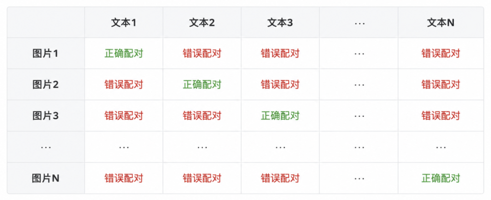
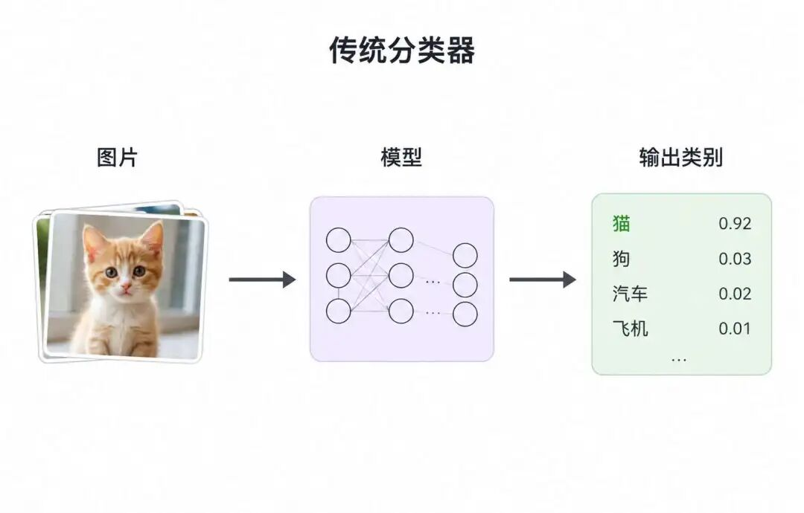
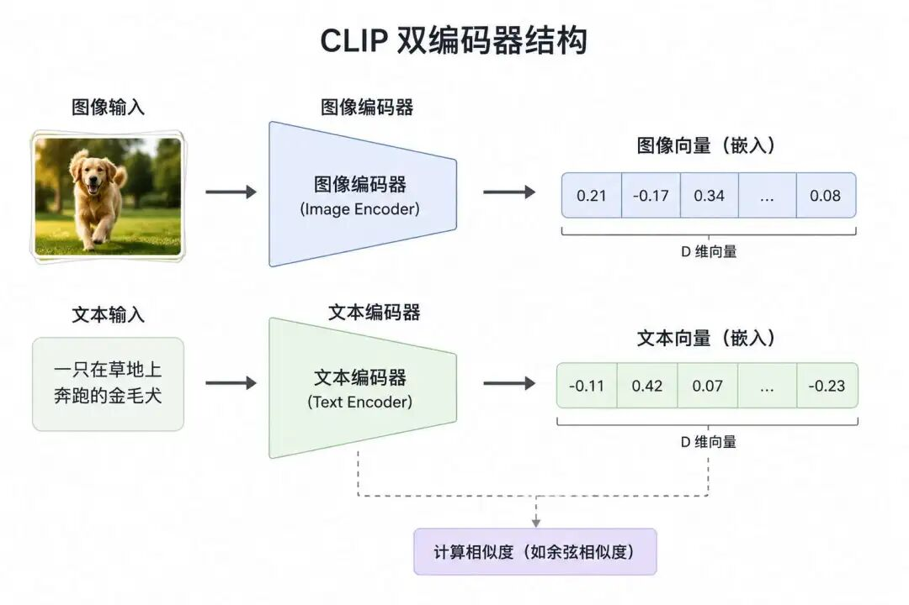
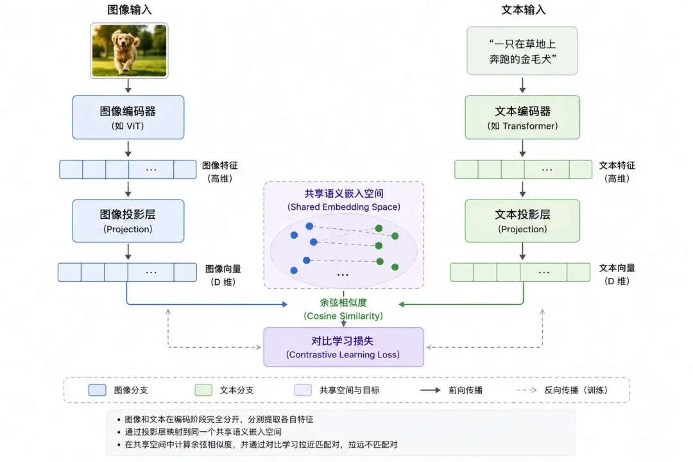
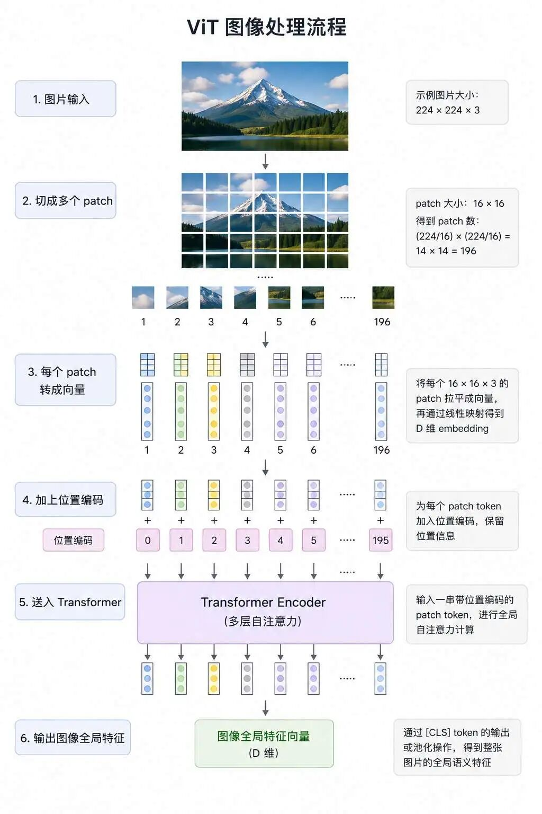
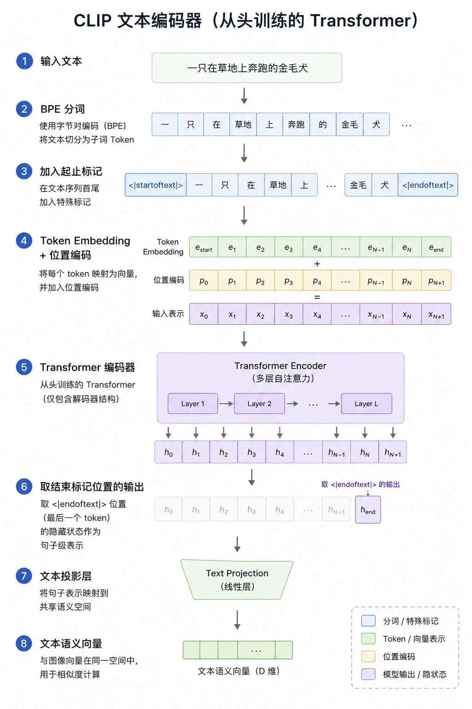
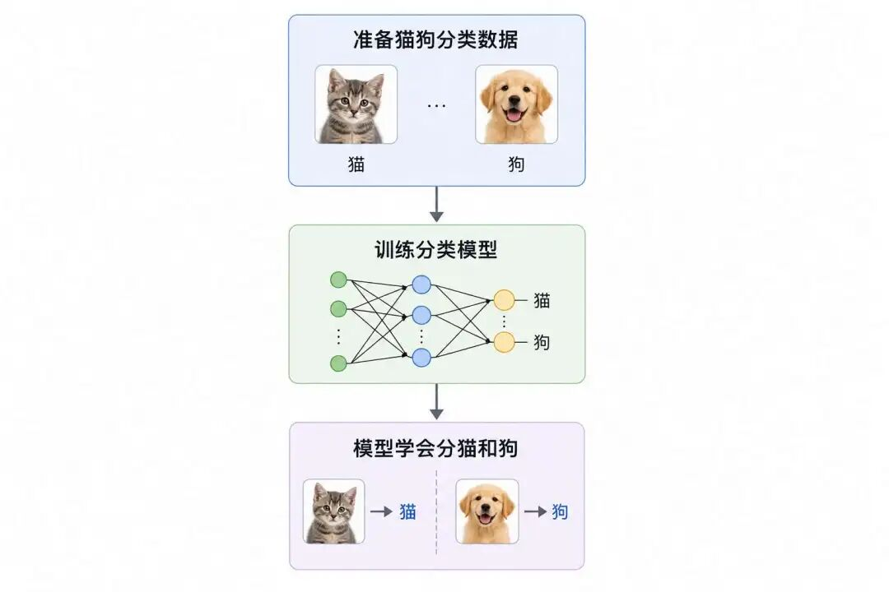
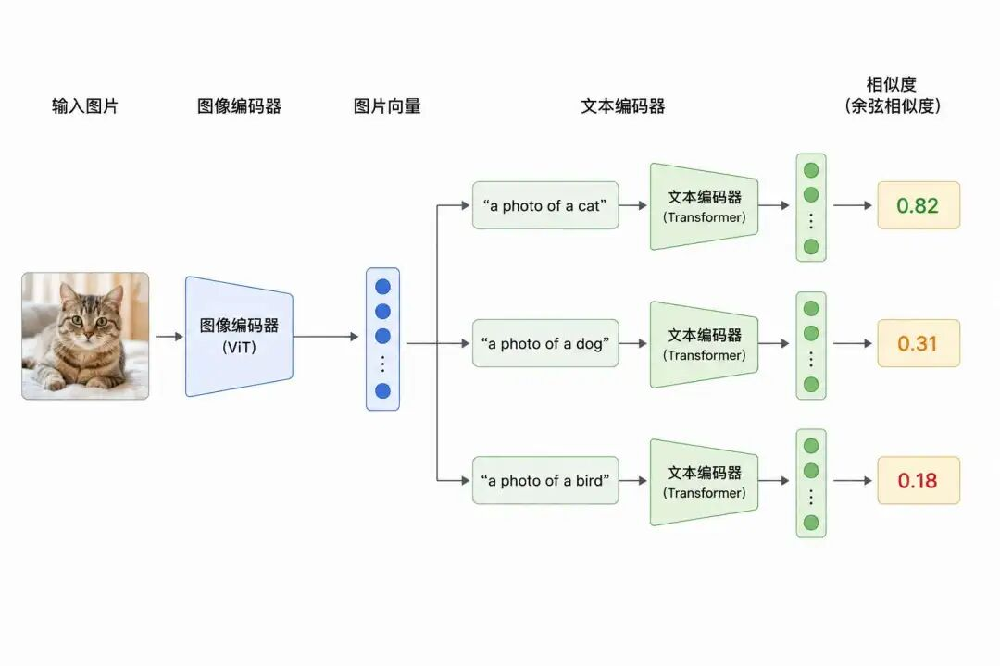
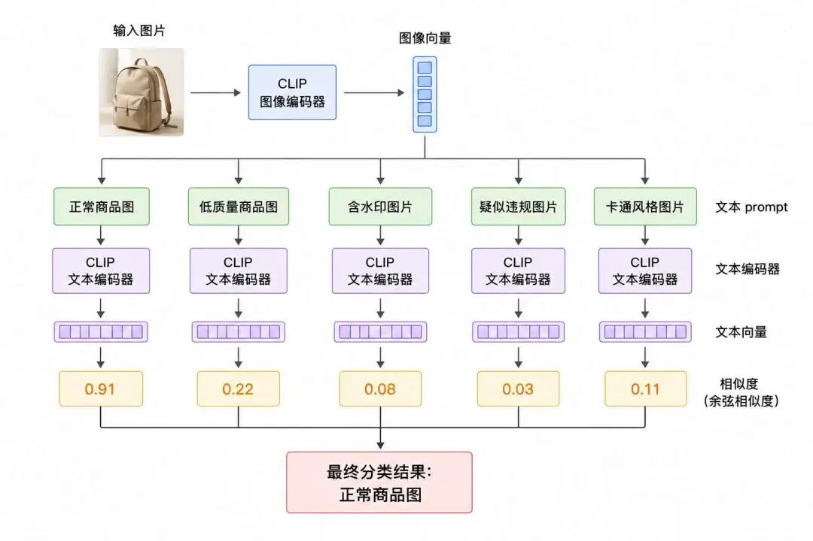

"语言的边界，就是世界的边界。"
-- Ludwig Wittgenstein（路德维希·维特根斯坦）
前面我们讲了很多语言模型，也讲了Transformer如何一步一步把自然语言处理推向大模型时代。但是人类理解世界，从来不只靠文字。
我们看到一只猫，不需要别人告诉我们"这是一只猫"；我们看到一张海边日落的照片，也能自然说出"夕阳""海浪""黄昏""浪漫"这些词，图像和语言在人的大脑里，本来就是互相连通的。
可是对早期AI来说，图像是图像，文字是文字，图像模型负责"看"，文本模型负责"读"。它们像两个各自很强的人，一个懂画面，一个懂语言，但彼此之间没有共同语言。
你让图像模型看一张猫的照片，它能告诉你这是猫，你让语言模型理解"猫坐在沙发上"，它也能理解这句话，但如果你问它们："这张图片和这句话是不是对应？" 事情就没那么简单了，这就是多模态学习要解决的问题。
多模态并不用想的太神秘，和我们之前学习的知识息息相关，说白了就是让AI同时理解不同形式的信息，比如文字、图片、音频、视频，让它们不再是孤立的世界，而是能够互相对齐、互相解释、互相配合。
而CLIP，正是多模态发展史里绕不开的一个关键模型。
2021年，OpenAI发布了CLIP，全称是 Contrastive Language-Image Pre-training，可以翻译为"基于对比学习的图文预训练"。
它最重要的贡献，不是让AI第一次看到图片，也不是让AI第一次读懂文字，而是让AI学会了一个非常重要的能力：它能够把图片和文字映射到同一个语义空间里。
也就是说，一张"猫坐在沙发上"的图片，和一句"a cat sitting on a sofa"的文本，虽然一个是像素，一个是文字，但经过CLIP编码之后，它们会在同一个向量空间里靠得很近。
这件事听起来简单，但意义非常大，因为一旦图像和文本进入同一个语义空间，AI就可以做很多过去需要专门训练才能完成的事情：可以用文字找图片，可以用图片找文字，可以不用重新训练就做图像分类，还可以作为后续多模态大模型的视觉理解基础。
所以，CLIP不是多模态的终点，但它确实是多模态从"任务模型"走向"基础表示模型"的重要分水岭。
这一篇，我们就来系统拆解CLIP：它为什么出现，到底解决了什么问题，它里面很出名的双塔架构是什么，对比学习损失怎么理解，它为什么能做零样本分类，它又有哪些局限。
先来说说传统多模态的局限性，要理解CLIP的重要性，我们要先看它出现之前，多模态研究到底遇到了什么麻烦。
在CLIP之前，多模态并非毫无进展，像ViLBERT、VisualBERT、LXMERT这些模型，已经开始尝试让图像和文本在Transformer里发生交互，但是那时候的多模态模型，整体上还存在几个明显问题。
传统图像模型很依赖人工标注。比如ImageNet这种数据集，里面每张图片都要有人告诉模型："这是猫"、"这是狗"、"这是汽车"、"这是飞机"。模型通过大量"图片-标签"对，学会图像分类。
但是多模态任务比单纯图像分类更麻烦。如果你要训练一个视觉问答模型，就不只是给图片打标签那么简单，而是要准备：图片、问题、答案，分别是什么？
问题里的词和图片里的区域有没有对应关系？比如一张图片里有一只狗、一辆车、一个红色球。
你问"狗旁边的球是什么颜色？" 模型不光要知道有狗、有球，还要知道球在狗旁边，而且颜色是红色。
这类数据标注成本非常高，更麻烦的是这些数据往往是"任务专用"的。
因为给视觉问答标的数据，只能拿来做视觉问答，给图像字幕生成标的数据，只能拿来生成描述，而给图文检索标的数据，又是另一套格式。
这就像给 AI 准备了一堆专项练习题：数学题、语文题、物理题各是一套。每换一个任务，就要重新准备一批题，模型很难形成通用能力。
早期多模态模型经常采用一种很朴素的方法：先用图像模型提取图像特征，再用文本模型提取文本特征，然后把两个向量拼在一起，交给后面的网络做判断。
这个思路不是完全没用，但它有一个问题，图像和文本并没有真正进入同一种语义坐标系。
图像特征关注的是颜色、纹理、形状、空间结构，而文本特征关注的是词义、语法、上下文。两者虽然被拼到了一起，但本质上还是各说各话。
这就像一个懂中文的人和一个懂英文的人坐在一张桌子旁边，两个人都很聪明，但没有翻译。你让他们把各自的信息写到一张纸上，再交给第三个人判断，这当然可以做一些事情，但它不是最理想的交流方式。
多模态真正想要的是：图像和文本能够被翻译成同一种"语义语言"。
看到一张猫的图片，模型知道它和"cat""猫""a small orange cat"这些描述靠得近；看到一张汽车图片，模型知道它和"vehicle""car""一辆车"靠得近。这才是"对齐"，CLIP真正做强的，正是这种图文对齐能力。
传统多模态模型通常是"为一个任务设计一个模型"，从来没出现过用一个通用模型统一所有任务。
传统CV技术在做视觉问答任务的时候就训练视觉问答模型，做图像字幕的时候就训练图像字幕模型，做图文检索的时候就训练图文检索模型，做图像....
这样不是不行，但问题是每个模型都像一座孤岛，一个模型学到的能力，很难直接迁移到另一个任务。
CLIP的思路则完全不同，它不先问"我要做哪一个具体任务"，而是先问能不能先训练出一种通用的图文表示？
只要图像和文本能进入同一个语义空间，很多任务就可以转化成一个简单问题，谁和谁更相似？
图像分类，本质上是判断一张图和哪段类别文本最相似。而图文检索，其实是在判断一段文本和哪张图片最相似，以及图片搜索，本质上也是把图片和文本都变成向量，然后做相似度搜索。
这就是CLIP的厉害之处，它不是为某个单一任务打造一个工具，而是先打造一个图文共享的语义底座。
CLIP训练的核心思想可以概括成一句话，用互联网上大规模图文对，通过对比学习，把图像和文本映射到同一个共享语义空间。
这句话里面有三个关键词：大规模图文对、对比学习、共享语义空间，我们一个一个拆开来看。
CLIP的设计者最一开始的最重要的直觉之一是：互联网上天然存在大量图文对。例如一张商品图旁边，通常有商品标题，新闻图片旁边，也有对应的新闻标题，而海量的社交媒体照片，通常都有用户配文，以及维基百科的插图旁边，也通常会有解释文字。
这些数据并不是人工为AI精心标注的，虽然它们很嘈杂，但有些图文对应得很好，就算有些对应得很粗糙，有些甚至不完全匹配，但是奈不住数量足够大。
CLIP使用了大约4亿个互联网图文对进行训练，它的核心判断是：即使单条数据有噪声，只要规模足够大，模型依然可以从海量弱监督信号中学到稳定的图文对应关系。
这和过去训练CV任务的思路不一样，过去我们希望给模型喂"标准答案"，CLIP则更像是把模型扔进互联网，让它从海量图文共现关系中自己总结规律。
比如模型反复看到"dog"这个词和各种狗的图片出现在一起，也反复看到"cat"这个词和各种猫的图片出现在一起。
久而久之，它就会明白：原来这些毛茸茸、四条腿、会趴着睡觉的东西，很多时候对应的是"cat"；那些体型、耳朵、嘴巴形状不同的动物，很多时候对应的是"dog"。
注意，这里不是人工告诉它"这张图的类别是猫"。
而是它在大量图文对中自己学会了"猫的视觉概念"和"猫的语言概念"之间的关联。
CLIP的训练方式叫对比学习。什么是对比学习？一句话可以说清楚：在同一个向量空军内，把正确配对的图像和文本拉近，把错误配对的图像和文本推远。
我们可以把它想象成一场舞会，舞会上有很多对舞伴。每一对舞伴，都是一张图片和它对应的文字描述。
比如：
图片1：一只猫坐在沙发上
文本1：a cat sitting on a sofa
图片2：一辆红色汽车停在路边
文本2：a red car parked on the street
图片3：一个人正在滑雪
文本3：a person skiing on snow
如果图片1和文本1是一对，那么它们应该靠近；图片1和文本2不是一对，它们应该远离；图片1和文本3也不是一对，它们也应该远离。
训练的时候，CLIP一次拿出一批图文对，假设这一批里面有N张图片和N段文本，那么它会计算所有图片和所有文本之间的相似度，形成一个N×N的相似度矩阵。
这个矩阵可以这么理解：矩阵对角线上的，是正确图文对。矩阵非对角线上的，是错误图文对。

而CLIP要做的事情就是让对角线上的相似度越来越高，让非对角线上的相似度越来越低，这就是对比学习的核心。
为了讲清楚CLIP的损失函数，我们来简单推导一下公式。假设一个batch里有N个图文对。图像编码器输出图像特征，文本编码器输出文本特征。经过投影和归一化之后，
我们得到：$[i_1, i_2, ..., i_N]$，表示N张图片的向量，$[t_1, t_2, ..., t_N]$，表示N段文本的向量。然后计算图像和文本之间的相似度：$[s_{ij} = \frac{i_i \cdot t_j}{\tau}]$
这里的点积可以理解为余弦相似度，因为CLIP会对特征做归一化。$\tau$ 是温度参数，用来控制相似度分布的"尖锐程度"。
CLIP的训练不是只做"图像找文本"，而是双向的。
图像到文本：对于每一张图片，都要从N段文本里找出正确的那一段。
$$ [ \mathcal{L}_{I \rightarrow T}-\frac{1}{N} \sum_{i=1}^{N} \log \frac{\exp(s_{ii})} {\sum_{j=1}^{N}\exp(s_{ij})} ] $$文本到图像：对于每一段文本，都要从N张图片里找出正确的那一张。
$$ [ \mathcal{L}_{T \rightarrow I}\frac{1}{N} \sum_{i=1}^{N} \log \frac{\exp(s_{ii})} {\sum_{j=1}^{N}\exp(s_{ji})} ] $$最终损失，就是两个方向取平均：
$$ [ \mathcal{L} \frac{1}{2} ( \mathcal{L}*{I \rightarrow T} + \mathcal{L}*{T \rightarrow I} ) ] $$这套损失的本质非常朴素：一张图片，要能找到自己的文字描述，而一段文字，也要能找到自己的图片。
所以CLIP不是只学会"看图找文字"，也不是只学会"看文字找图"，而是两个方向同时训练，这也解释了为什么它后来天然适合做图文检索。
CLIP最后训练出来的，不是一个传统意义上的分类器。传统分类器通常是这样的：

CLIP不是这样，CLIP训练出来的是两个编码器：

关键在于，这两个向量在同一个空间里。也就是说，图片可以变成一个向量，文字也可以变成一个向量。只要语义相近，它们就靠得近，语义不相关，它们就离得远。
这就像CLIP在图像和文字之间建立了一本"语义词典"：
从工程角度看，这件事非常实用。你可以提前把一批图片全部编码成向量，存进向量数据库。
用户搜索"一只穿红衣服的小狗"，你只需要把这句话也编码成向量，然后在图片向量库里找最相近的图片，这就是文搜图。
反过来，你上传一张图片，把图片编码成向量，再去文本库里找最相似的描述，这就是图搜文。
所以CLIP真正厉害的地方，不是它会背多少类别，而是它建立了图像和语言之间的通用语义接口。
CLIP的架构并不复杂。它是一个典型的双塔结构，也可以叫双流架构，所谓双塔结构，就是能够一边处理图像，一边处理文本。

图像和文本在编码阶段是分开的，图像走图像编码器，文本走文本编码器。两边各自提取特征，最后通过投影层映射到同一个共享空间，再计算相似度。
这里要特别注意一点：CLIP不是深度融合模型，而是图文对齐模型。
它不是在每一层里都让图像token和文本token互相注意，因为它的图像编码器和文本编码器基本是分开的，所以直到最后才在共享向量空间里对齐。
但是这带来了一个明显好处：效率高，因为图片向量可以提前算好，文本向量也可以提前算好。检索时不需要让每张图片和每段文本都重新做复杂交互，只需要做向量相似度计算。
不过这也带来一个明显缺点：就是在细粒度交互层面是不够强的，比如它可以知道"一张图整体上像不像这段文字"，但它却不擅长精确判断"图中左上角那个红色小物体是否对应文本里的某个词"。
这也是后续很多多模态模型继续改进的地方。我们可以把几类架构简单对比一下：
| 类型 | 核心特点 | 代表模型 |
|---|---|---|
| 双塔对齐模型 | 图像和文本分别编码，最后在共享空间中对齐 | CLIP、ALIGN |
| 跨模态融合模型 | 图像token和文本token在中间层发生交互 | ViLBERT、LXMERT、BEiT-3 |
| 视觉语言生成模型 | 把视觉信息接入语言模型，用于问答、对话、生成 | Flamingo、BLIP-2、LLaVA |
所以CLIP的定位不是万能多模态大脑，它首先是一个强大的图文对齐模型，它擅长把图片和文字放到同一个语义空间里比较相似度。
我们先来讲讲CLIP的图像编码器，它主要用了两类架构：ResNet和Vision Transformer，也就是ViT。
首先来讲ResNet版本，ResNet是经典卷积神经网络，它擅长从图像中提取局部纹理、边缘、形状，再逐层组合成更高层的语义特征。
CLIP没有直接照搬普通ResNet，而是做了一些调整，比如使用更适合图像特征聚合的注意力池化，让模型在最后汇总图像信息时，不只是简单平均所有区域，而是能更关注关键区域。
你可以把普通平均池化理解为"所有位置一视同仁地投票"，而注意力池化则像是"让关键位置拥有更高投票权"。
这对于图文对齐很重要，因为一张图片里可能有很多背景信息，但文本描述往往只关注其中最重要的对象。
比如一张图里有天空、草地、远处建筑、前景的一只狗，文本可能只写"a dog running on grass"，模型要学会把注意力更多放在"狗"和"草地"这些关键语义上，而不是平均看待整张图。
CLIP更被后续多模态模型广泛使用的其实是ViT版本。ViT的核心思想我们前面其实已经接触过：既然Transformer可以处理文本序列，那能不能把图片也变成一种"序列"？
答案是可以。ViT会把一张图片切成很多小块，每个小块叫一个patch。比如一张224×224的图片，如果每个patch是16×16，那么就可以切成：$[14 \times 14 = 196]$ 个patch。
然后每个patch会被拉平成向量，再映射成Transformer可以处理的embedding。这样，图片就从一个二维像素矩阵，变成了一串patch token。流程大概是这样：

这和文本Transformer很像，文本的总体处理过程是这样：
句子 -> token序列 -> embedding -> Transformer图片的总体处理过程是这样：
图片 -> patch序列 -> embedding -> Transformer所以ViT其实是在用Transformer处理图像，CLIP里的ViT版本通常会用一个特殊的全局token来汇总整张图片的信息，最后得到一个图像向量，这个向量再经过投影层，进入图文共享语义空间。
ViT的优势在于它更擅长建模全局关系，而卷积网络天然偏局部，虽然多层堆叠后也能形成全局感受野，但比不了Transformer从一开始就可以让每个patch和其他patch建立联系。
这与CLIP的目标很匹配，因为CLIP要做的是全局图文对齐，一张图片整体上和一段文本是否匹配，ViT对全局语义的建模能力，正好适合这个任务。
CLIP的文本编码器不是RoBERTa，也不是BERT。它使用的是一个从头训练的Transformer文本编码器。原始CLIP的文本编码器训练过程如下图：

它使用的是BPE分词，BPE分词我们之前讲过，这里回顾一下，也就是把文本拆成子词单元，比如一个英文单词可能被拆成多个subword，中文在不同实现里也会被拆成不同粒度的token。
CLIP会在文本序列中加入特殊标记，然后使用Transformer进行编码。最后，它取文本结束标记位置对应的输出，作为整段文本的全局表示。
这一点和很多BERT类模型不一样，BERT常见做法是使用[CLS]位置的输出作为句向量。
CLIP原始文本编码器则使用结束标记位置的输出作为文本表示。
另外，CLIP文本长度不是无限的，在比较常见的实现里，它的上下文长度一般是77个token左右，超过这个长度的文本会被截断。
这也决定了CLIP更适合理解短文本、标签、描述、prompt，而不是长篇文章。所以我们要准确理解CLIP的文本编码器。
它并不是拿一个现成RoBERTa直接套上去，也不是靠MLM、NSP这些语言模型任务训练出来的。它是在图文对比学习目标下，和图像编码器一起从头训练出来的文本编码器。
这也解释了为什么CLIP的文本编码器很适合处理"a photo of a dog""a painting of a mountain"这种图像描述式文本，它的文本能力不是为了写文章，而是为了和图像对齐。
图像编码器输出的是图像特征，文本编码器输出的是文本特征。但这两个特征一开始并不一定维度相同，也不一定分布一致，所以CLIP在两边各加了一个投影层：
图像特征 -> 图像投影层 -> 图像共享向量
文本特征 -> 文本投影层 -> 文本共享向量投影层的作用，就是把图像和文本送进同一个维度的共享空间。然后CLIP会对这些向量做归一化，让它们都落在单位球面上，这样做之后，向量之间的点积就可以理解成余弦相似度。
如果两个向量方向接近，就说明语义接近，而如果方向差别很大，就说明语义不接近。这就像我们不关心两个人说话声音大不大，而关心他们说的是不是同一个意思。
CLIP的成功，不只是架构漂亮，更重要的是规模。它用了大规模数据，也用了大batch训练。
CLIP的训练数据来自互联网图文对，大约4亿组。这些数据不是精标注数据，它们有噪声和偏差，也有不准确的地方。
但是CLIP的思路不是追求每条数据都完美，而是利用大规模弱监督，这就有点像人学习这个世界的运行规律。
我们小时候也不是每次看到东西，都有人拿着标准答案告诉我们："这是猫，这是狗，这是汽车。"很多时候，我们是在各种语境里反复看到、听到、接触到这些概念，然后慢慢形成理解。
CLIP也是这样，它不需要每张图片都有精确类别标签，它只需要大量图片和文本在语义上大致相关，通过对比学习，模型就能逐渐学到稳定的图文对应关系。
当然，这也带来一个问题：互联网数据里的偏见、噪声、错误，也会进入模型。这个问题我们后面讲局限时再展开。
对比学习很依赖负样本，一个batch里有N个图文对，那么对于每张图片来说，除了自己的正确文本之外，其他N-1段文本都可以作为负样本。所以batch越大，负样本越多。负样本越多，模型就越不能偷懒。
如果一个batch里只有4个图文对，模型只要从3个错误选项里找正确答案，难度很低。但是假如一个batch里有几万对图文对，模型就要从几万个候选里找出正确匹配，这会迫使它学习更本质、更可泛化的语义特征。
原始CLIP训练中使用了非常大的minibatch size，达到32768。这个规模对普通训练来说很夸张，但对于对比学习来说很有价值。
回到舞会的类比，如果舞会上只有三四对舞伴，找对自己的舞伴很容易。但是如果舞会上有三万多对舞伴，还能准确找到自己的舞伴，就说明你真的认识对方，而不是靠衣服颜色、站位这种表面线索。
CLIP就是通过这种大规模对比，逼迫模型学到更稳定的图文语义关系。
CLIP的损失函数里有一个温度参数 $(\tau)$，直观理解，温度参数控制的是模型对相似度差异的敏感程度，有关于温度参数，在之前篇幅有过介绍，这里简单回顾一下：
温度 $(\tau)$ 高，相似度分布更平滑。温度 $(\tau)$ 低，相似度分布更尖锐。
但是原始CLIP不是手动设定一个固定温度，也不是简单从0.5慢慢调到0.07。它把温度相关的logit scale设计成可学习参数，让模型在训练过程中自己学习合适的缩放强度。
这很重要。因为不同训练阶段、不同模型规模、不同数据分布下，相似度分布的最佳尺度不一定一样。把它设计成可学习参数，相当于让模型自己调节"相似度放大镜"的倍率。
还有一个很容易误解的点：原始CLIP不是简单把一个ImageNet预训练好的视觉模型和一个BERT/RoBERTa预训练好的文本模型拼起来。
它的图像编码器和文本编码器是在图文对比学习目标下联合训练的。这意味着，图像编码器不是只为了图像分类而训练，文本编码器也不是只为了语言建模而训练。
而是两者从训练目标上就被绑定到一起，图像表示要适合和文本表示比较，文本表示也要适合和图像表示比较。
这也是CLIP和普通"图像模型+文本模型拼接"的本质区别：CLIP不是让两个模型临时握手，而是一开始就让两个模型学会在同一个语义空间里说话。
CLIP最让人惊讶的能力，是零样本分类。什么叫零样本分类？
简单说，就是不针对某个分类任务重新训练，直接拿来分类。传统图像分类是这样的：

CLIP不是这样，CLIP可以把分类任务变成图文匹配任务。比如我们要判断一张图片是猫、狗还是鸟，不需要重新训练一个分类头。我们只需要写几段文本：
a photo of a cat
a photo of a dog
a photo of a bird然后把这三段文本分别送入CLIP文本编码器，得到三个文本向量。再把待分类图片送入CLIP图像编码器，得到图像向量，最后比较这张图片和三段文本哪个最相似：

相似度最高的是猫，所以分类结果就是猫，这就是CLIP的零样本分类，它厉害的地方在于类别不再必须是固定标签，而可以由自然语言描述出来。过去分类器的类别是死的。你训练了1000类，它就只能分这1000类。
CLIP的类别可以临时用文本写出来，你想分"素描风格的猫"或者是"卡通风格的狗"，以及"航拍视角的城市"，都可以通过文本prompt定义。
这就很接近大模型时代的味道了：任务不再完全由训练数据定义，而可以由自然语言描述定义。
原始CLIP论文中，最有代表性的结果是：在ImageNet上，CLIP的ViT-L/14@336px版本可以在不使用ImageNet训练标签进行监督训练的情况下，取得接近传统监督ResNet-50的零样本分类效果。
这就是为什么CLIP当时引起很大关注，因为它证明了一件事：自然语言监督不仅能训练语言模型，也能训练视觉模型。
CLIP的能力很适合很多实际场景，以文搜图和图搜文为例：
文搜图指的是什么？
比如用户输入一句话："一只戴着红色项圈的猫坐在沙发上"。
系统把这句话编码成文本向量，然后去图片向量库里搜索最相近的图片，这就是文搜图。很多图库搜索、商品搜索、内容平台搜索，都可以用类似思路。
图搜文指的又是什么？
比如用户上传一张图片，系统把图片编码成图像向量，再去文本库里找最相似的描述。比如上传一张海边日落图，系统可能匹配到：
sunset over the ocean
a beautiful beach at dusk
海边黄昏这就是图搜文。
零样本分类应用
还有零样本分类，假如用户不想重新训练模型，只想快速做一个分类器，比如判断图片是不是正常商品图：

这些类别都可以先写成文本prompt，再让CLIP计算图像和这些prompt的相似度。这在工程里很实用，因为它降低了冷启动成本。
你不用一上来就准备大量标注数据，也不用马上训练新模型。先用CLIP做一个零样本或少样本方案，验证业务是否可行，再决定后面要不要精调。
CLIP的影响不止在检索和分类上，后来的很多视觉语言模型，也会复用或借鉴CLIP的视觉表征能力。
比如LLaVA这类模型，会把图像编码器提取到的视觉特征，通过一个连接模块送进大语言模型，让语言模型具备看图对话能力。
BLIP-2这类模型，也会把视觉编码器和语言模型连接起来，中间加上轻量的桥接模块。
这类模型和CLIP不完全一样，因为它们要做问答、对话、生成，需要更强的模态交互和语言生成能力。但CLIP提供的图文对齐思想和视觉表征，确实影响了后续大量多模态模型。
CLIP很重要，但不能把它神化。它有几个非常明显的局限性，这也是后来催生了LLaVA、BLIP、Flamingo等系列多模态大模型的原因。
CLIP最擅长的是判断一张图和一段话整体上是否匹配，但是它不擅长细粒度关系。比如一张图片里有：一只黑狗，一只白猫，一个红球。
文本A说：
a black dog, a white cat, and a red ball文本B说：
a white dog, a black cat, and a red ball对人来说，这两句话明显不同。但对CLIP来说，它可能都觉得差不多，因为它抓到了"dog、cat、ball"这些全局语义，却未必能精确绑定"黑色属于狗""白色属于猫"。
这就是双塔架构的局限，图像和文本在编码阶段没有细粒度交互，所以它很难像跨模态融合模型那样精确对齐局部区域和具体词语。
CLIP能判断图像和文本是否匹配，但它本身不能生成图片，也不能生成长文本回答。
它不是DALL·E，也不是Stable Diffusion、GPT-4V，它更像一个"语义匹配器"或"图文对齐器"。
当然，CLIP后来深刻影响了图像生成模型。比如DALL·E 2，也就是unCLIP路线，就使用CLIP图像表征作为生成过程中的重要中间表示。
Stable Diffusion早期版本也使用CLIP文本编码器，把prompt变成扩散模型可以使用的条件信息，但是这不等于说"DALL·E就是基于CLIP做文本生成图像"。
更准确的说法是：CLIP提供了强大的图文对齐思想和表征能力，后续图像生成模型在不同程度上借鉴、使用或扩展了这种能力。
CLIP文本编码器的上下文长度有限，因此它更适合短描述、标签、prompt，而不是长文档理解。
如果你输入一大段复杂文章，CLIP并不会像大语言模型那样逐句推理、总结、分析。它通常只能把这段文本压成一个整体向量，用于和图像做相似度比较，所以CLIP适合这种零样本、短描述的场景：
a photo of a cat
a red car on the street
a man riding a bicycle
一张城市夜景照片而不适合这种长文写作，推理分析的场景：
请阅读这篇3000字的文章，并分析其中第二段和第五段的逻辑关系这不是CLIP能够完成的任务，它是图文对齐模型，不是长文本推理模型。
CLIP使用互联网数据训练，互联网有什么，它就可能学到什么。互联网里有知识真实信息，但也有偏见和错误关联。
CLIP可以利用正常图文进行训练，但是这些知识和图文里面也可能存在刻板印象和不良内容，所以CLIP可能继承数据中的偏见。
比如职业、性别、地域、种族、年龄等敏感属性，如果在训练数据里长期存在偏斜关联，模型就可能在相似度判断中体现出来。
这也是所有大规模弱监督模型都要面对的问题。规模可以带来能力，但规模不自动带来公平。
数据可以提供知识，但数据也会携带偏见。所以CLIP在敏感场景中不能直接裸用，必须经过评估、过滤、校准和安全治理。
CLIP最重要的意义，不只是某个指标高，也不是某个任务强。
它真正改变的是多模态研究的思路。过去我们经常这样做：
而CLIP带来的思路是先训练一个通用图文语义空间，然后把很多任务转化成相似度匹配问题，这就是从"任务驱动"走向"表示驱动"。
它让我们看到多模态模型不一定要从具体任务开始，我们可以先通过大规模弱监督，训练一个通用的图文对齐底座，这个思想后来被大量模型吸收。
ALIGN同样走大规模图文对齐路线。BLIP、BLIP-2进一步结合图文理解和生成。Flamingo尝试把视觉信息接入语言模型，实现少样本视觉语言任务。
LLaVA把视觉编码器和大语言模型连接起来，推动了开源多模态对话模型的发展。Stable Diffusion等图像生成模型，也在文本条件编码上受到CLIP体系的影响。
所以，CLIP不是所有多模态模型的唯一源头，也不是所有路线都完全继承CLIP。但它确实把"大规模图文对齐"这条路线推到了一个非常重要的位置。
它证明了自然语言不仅可以监督语言模型，也可以监督视觉模型，以及图像和文本可以通过对比学习进入同一个语义空间。只要表示空间足够通用，很多任务就可以用prompt和相似度完成。
我们最后把CLIP放回整个多模态发展脉络里看，CLIP解决的不是所有多模态问题，它不能像多模态大语言模型那样长篇回答问题，也不能像扩散模型那样生成图片，更不能像人一样真正理解复杂视觉场景中的因果和关系。
但是它完成了一件非常关键的事：让图像和文本拥有了一个共享语义空间。这件事相当于给图像和语言之间架了一座桥。
在CLIP之前，图像模型和文本模型更像两个分开的世界，而在CLIP之后，我们可以把图片和文字都变成向量，并在同一个空间里比较它们的语义距离。
这就是为什么CLIP可以做零样本分类，可以做图文检索，可以成为很多后续多模态模型的基础组件，也可以深刻影响图像生成和视觉语言模型的发展。
如果说Transformer让AI掌握了语言世界里的上下文关系，那么CLIP则让AI第一次大规模地学会了图片里的视觉概念，和文字里的语言概念，可以对应起来。
从CLIP开始，多模态模型不再只是"把图片特征和文本特征拼起来"，而是开始真正追求一个更大的目标：让机器把不同形式的信息，统一到同一个语义世界里。
这也是后面我们继续理解BLIP、Flamingo、LLaVA、GPT-4V这类多模态模型的关键入口。
CLIP：一种基于大规模图文对比学习的多模态模型。它的核心目标不是生成文本或图片，而是把图像和文本编码到同一个共享语义空间里，让二者可以直接比较相似度。
双塔架构：指图像和文本分别走各自的编码器，最后再进入共享空间对齐。它的优点是训练和检索效率高，适合大规模图文匹配；缺点是图文在中间层缺少细粒度交互。
对比学习：一种"拉近正样本、推远负样本"的训练方式。在CLIP中，正确配对的图像和文本是正样本，不匹配的图文组合是负样本，模型通过这种方式学会图文语义对齐。
共享语义空间：图像和文本虽然原始形式不同，但经过编码后都变成同一个空间里的向量。只要语义接近，向量就靠得近；语义无关，向量就离得远。
零样本分类：不重新训练分类器，而是把类别写成文本描述，比如"a photo of a cat"，再比较图片向量和类别文本向量的相似度。CLIP的零样本能力，本质上来自它训练出的图文共享空间。